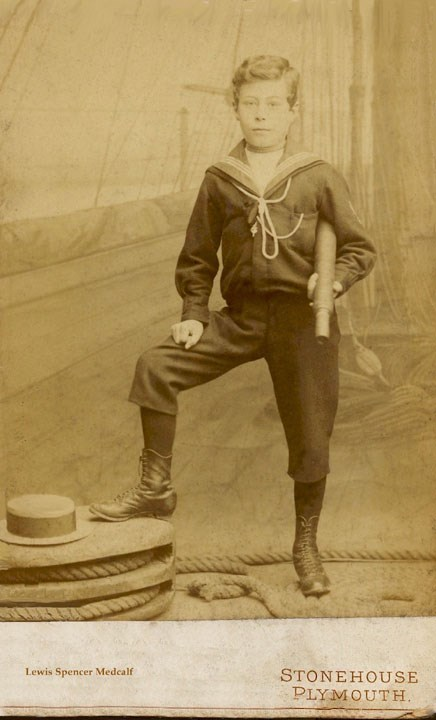
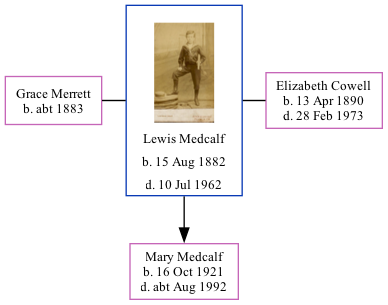

Lewis Spencer Medcalf 1882 - 1962
[ Home ] | [ Calendar ] | [ Surnames Index ] | [ Family History ], Lewis Medcalf, the husband of Elizabeth Mabel Cowell (the third cousin twice-removed on the mother's side of Nigel Horne), was born in Rochester, Kent, England on Aug 15, 18821,2,3 and was married twice - to Grace Merrett (on Jun 23, 1908 in Bredhurst, Kent, England) Elizabeth Cowell (c. May 1920 in Medway, Kent)4. He had 1 child with Elizabeth Cowell, Mary Helen. On Sep 29, 1939, he lived at 94 Rochester Avenue in Rochester1. He served in the army from 1914 to 1920 the year he married Grace Merrett (soldier Number: 48260, Rank: Private, Corps: East Surrey Regiment).
He died on Jul 10, 1962 in Chatham, Kent3.
Children
- Mary Helen was born on Oct 16, 1921
Citations
- 1939 Register - Findmypast (was the head of the household)
- England & Wales births 1837-2006 - Findmypast
- England & Wales deaths 1837-2007 - Findmypast
- England & Wales marriages 1837-2008 - Findmypast
Media
Lewis Spencer Medcalf

1939 Register Transcription - TNA-R39-1772-1772G-016-18
1939 Register - TNA/R39/1772/1772G/016/17
Britain, Campaign, Gallantry & Long Service Medals & Awards - GBM/MCI/3000465
England & Wales deaths 1837-2007 - BMD/D/1962/3/AZ/000623/020
England & Wales births 1837-2006 - BMD/B/1882/3/AZ/000379/328
England & Wales marriages 1837-2005 - BMD/M/1920/2/AZ/001019/073
Kent marriages and banns - PRS/MEDWAY/MAR/0005333/1
Family Tree
Generated by Ged2Site. Last updated on Jul 20, 2025